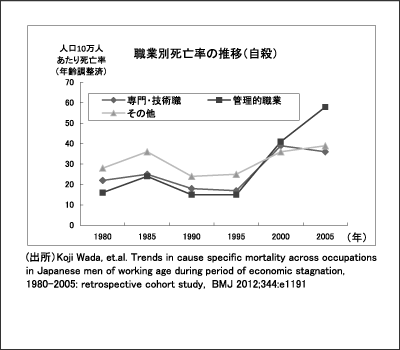

「管理職になると死亡率は1.6倍」（『週刊新潮』7月5日号）――衝撃的な見出しで取り上げられた、働き盛りの日本のビジネスマンを襲う問題 は決して他人事ではない。
ここで取り上げられているのは、北里大学の和田耕治講師らの研究グループが、30～59歳の日本人男性就業者の死亡率と職種との関係を1980年から5年おきに分析した研究結果だ。それによると、日本の管理職は1995年には、10万人あたり152人死亡しているが、2005年には 249人へと1.6倍も増加しているという。
和田講師らの研究論文は今年3月、英医学誌の「ブリティッシュ・メディカル・ジャーナル」に掲載され、大きな注目を集めた。
この研究には、いくつかの特徴がある。まず年齢構成を調整した死亡率を使うことで、職種と…続きを読む